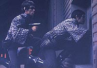
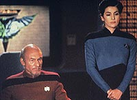
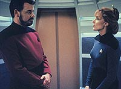
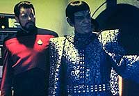

|
MANCHETE
DO EPISDIO
Riker
tem a chance de evoluir quando
se coloca dezesseis anos no futuro
Episdio
anterior | Prximo
episdio
Sinopse:
Data Estelar: 44286.5.
Aps desmaiar durante uma misso no planeta Alfa Onias III, Riker
acorda 16 anos depois. Ele agora capito da Enterprise, e vivo
com um filho, de nome "Jean-Luc". A dra. Crusher explica
que durante a misso em Alfa Onias III, ele contraiu um vrus que
apenas recentemente se tornou ativo, apagando todas as memrias de
Riker dos anos anteriores.
Nesse futuro, Riker descobre que um tratado de paz com os Romulanos
est para ser assinado, e o seu antigo nmese Romulano, o agora
embaixador Tomalak, est a bordo da Enterprise, assim como o
almirante Jean-Luc Picard!

Ao verificar que sua esposa morta era Minuet, um personagem criado
pelo holodeck quase quatro anos atrs por quem Riker se apaixonou,
o comandante descobriu que tudo no passava de uma fraude.
Tomalak ento surge e diz ser aquela uma simulao com o objetivo
de fazer Riker contar a localizao de um posto estratgico da
Federao na Zona Neutra. O comandante colocado em uma cela com
um menino humano, de aparncia igual a de seu filho.

Quando os dois conseguem escapar dos Romulanos e o menino chama
Tomalak de "embaixador", Riker descobre que mais uma vez
tudo no passou de uma farsa. No havia Romulano algum, somente o
menino --na verdade um aliengena que vive sozinho em Alfa Onias
III, aps a morte de sua me. Ele queria manter Riker l para lhe
fazer companhia.
Com a fraude exposta, Riker volta para a Enterprise, mas decide
acabar com a solido do aliengena, levando-o para a nave com ele.
Comentrios:
"Future Imperfect" tem vrias qualidades
interessantes. Em primeiro lugar, apresenta um atraente futuro
alternativo, do qual temos vontade de conhecer mais. Ver Picard como
almirante e Data, vestido em vermelho, como primeiro-oficial de
Riker, no mnimo curioso.
As constantes falhas no computador do a dica de que algo est
muito errado. O primeiro pensamento o de que os Romulanos esto
aprontando para o comandante. Por isso, fantstico descobrir que
na verdade os viles de sangue verde e orelhas pontudas nada tm a
ver com a fraude encenada para Riker!

A premissa do episdio intrigante e os roteiristas conseguiram
escrever a histria de modo a dar pistas do que realmente se trata
a histria sem tornar o desfecho totalmente previsvel. Por
exemplo, os Romulanos agem de forma estpida demais e deixam Riker
e o menino escapar facilmente. Mas no o suficiente para que se
perceba que a situao uma simulao. S quando o menino
menciona o "embaixador Tomalak" que tudo fica claro.
Alm de possuir elementos interessantes, o episdio tambm
apresenta boa chance de desenvolvimento para Riker. Conhecemos mais
a perspectiva do primeiro-oficial em se tornar pai, a frustrao
com a suposta sada de Troi da Enterprise e descobrimos que sua
paixo por Minuet no est to morta quanto deveria.
Em termos de produo, o episdio tambm tem bom desempenho. A
direo boa e as mudanas no cenrio da Enterprise so
convincentes, com a incluso de painis na ponte e novos decalques
nas portas e corredores. Simples, mas eficiente.

J a maquiagem no est nos seus melhores dias. Riker no parece
estar 16 anos mais velho, e suas mechas brancas deixaram-no mais
esquisito do que envelhecido. La Forge, apesar da ausncia do
Visor, no parece um dia mais velho. O aliengena tampouco parece
convincente. A nica maquiagem que realmente funcionou foi a de
Picard, com os (poucos) cabelos mais compridos e o cavanhaque.
Por fim, um destaque para a cena em que Riker desmascara a primeira
farsa, na ponte da Enterprise. O comandante perguntando a Data sobre
o tempo de chegada em Dobra 1, 7, 8 e 9 empolgante, e a sequncia,
onde ele manda Picard calar a boca, sensacional. Se no fosse
por mais nada, o episdio valeria por ela.
Citaes:
Troi - "So, what
did you wish for, Will?"
("Ento, o que voc pediu, Will?")
Riker - "Music lessons."
("Aulas de msica.")
Riker - "I said shut up! As in 'Close your mouth and stop
talking'."
("Eu disse cale a boca! Como em 'feche a boca e pare de
falar'.")
Trivia:
 Nesse episdio aparece novamente Minuet, a alma gmea hologrfica
de Riker.
Nesse episdio aparece novamente Minuet, a alma gmea hologrfica
de Riker.
Andreas
Katsulas faz sua terceira apario como o Romulano Tomalak. A
primeira vez em que ele apareceu na srie foi em "The Enemy"
e posteriormente em "The Defector". O personagem
ainda ser visto no episdio final da Nova Gerao, "All
Good Things...". Entretanto, seu papel mais conhecido o
do Nard G'Kar, na srie Babylon 5.
A
nave Romulana de Tomalak neste episdio tem o nome "Decius".
Este era o nome de um oficial pertencente tripulao do
comandante Romulano interpretado por Mark Lenard (Sarek) no episdio
da Srie Clssica "Balance
of Terror". Decius morreu neste episdio.
Tambm
no clssico "Balance
of Terror", foi dito que havia oito postos avanados
na Zona Neutra naquela poca (2265). Em 2367, data deste episdio,
existem pelo menos 23 postos avanados naquela rea.
Ficha
tcnica:
Escrito por J. Larry Carroll
e David Bennett Carren
Direo de Les Landau
Exibido em 12/11/1990
Produo: 082
Elenco:
Patrick Stewart como
Jean-Luc Picard
Jonathan Frakes como William Thomas Riker
Brent Spiner como Data
LeVar Burton como Geordi La Forge
Michael Dorn como Worf
Gates McFadden como Beverly Crusher
Marina Sirtis como Deanna Troi
Wil Wheaton como Wesley Crusher
Elenco convidado:
Andreas Katsulas
como Tomalak
Chris Demestral como Jean-Luc/Ethan
Carolyn McCormick como Minuet
Patti Yasutake como enfermeira Ogawa
Todd Merrill como alferes Gleason
April Grace como Hubbell
Dana Tjowander como Barash
George O'Hanlon Jr. como chefe de transporte
Episdio
anterior | Prximo
episdio
|